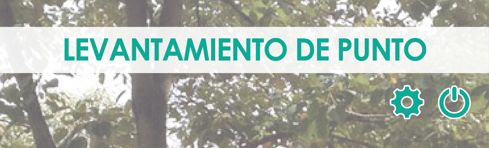
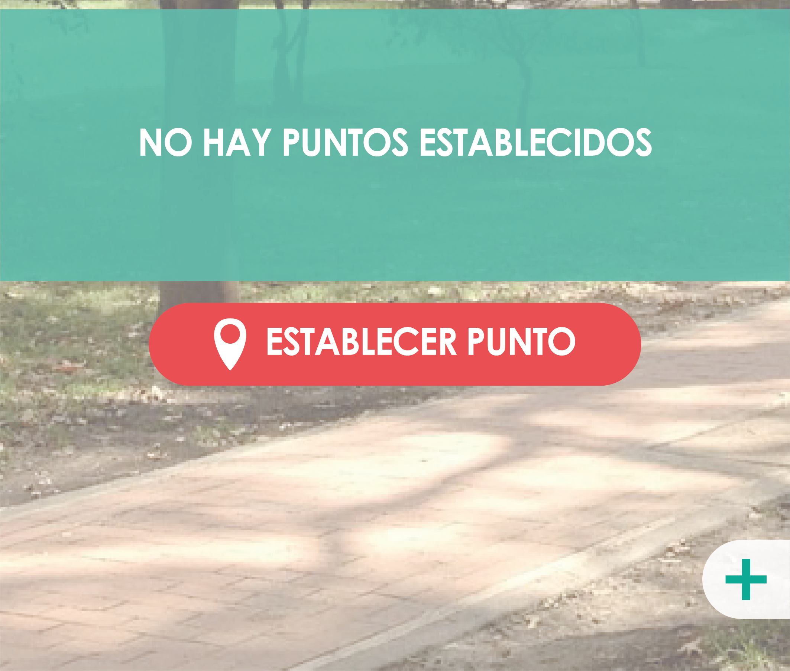

<ion-content class="background-image">
  

  <ion-card>
      <ion-item class="select">
          <ion-label>Seleccione</ion-label>
          <ion-select value="calcularpunto" okText="Okay" interface="popover" [(ngModel)]="selectcategory" (ionChange)="codeSelected()">
            <ion-select-option value="1">Punto</ion-select-option>
            <ion-select-option value="2">Linea</ion-select-option>
            <ion-select-option value="3">Poligono</ion-select-option>
          </ion-select>
                      
      </ion-item>
                          
    <ion-card-content>
      <!-- this creates a google map on the page with the given lat/lng from -->
      <!-- the component as the initial center of the map: -->  
      <agm-map (mapClick)="agregarMarcador($event)" [latitude]="lat" [longitude]="lng" [zoom]='15'>
        <agm-marker *ngFor="let marcador of marcadores" [latitude]="marcador.lat" [longitude]="marcador.lng">
          <agm-info-window>
            <strong>{{marcador.title}}</strong>
            <p>{{marcador.description}}</p>
          </agm-info-window>
        </agm-marker>
        <agm-polygon *ngIf="polygon" [paths]="paths">
        </agm-polygon>
        <agm-polyline *ngIf="polyline">
          <agm-polyline-point [latitude]="latA" [longitude]="lngA">
          </agm-polyline-point>
          <agm-polyline-point [latitude]="latB" [longitude]="lngB">
          </agm-polyline-point>
      </agm-polyline>
      </agm-map>
    </ion-card-content>
                          <button class="point"(click)=point()>ESTABLECER PUNTO</button>
                          <button class="new"(click)=new()>NUEVO</button>
                          
                          <button class="atras" (click)=back()>Atras</button>
                        </ion-card>
         
</ion-content> 